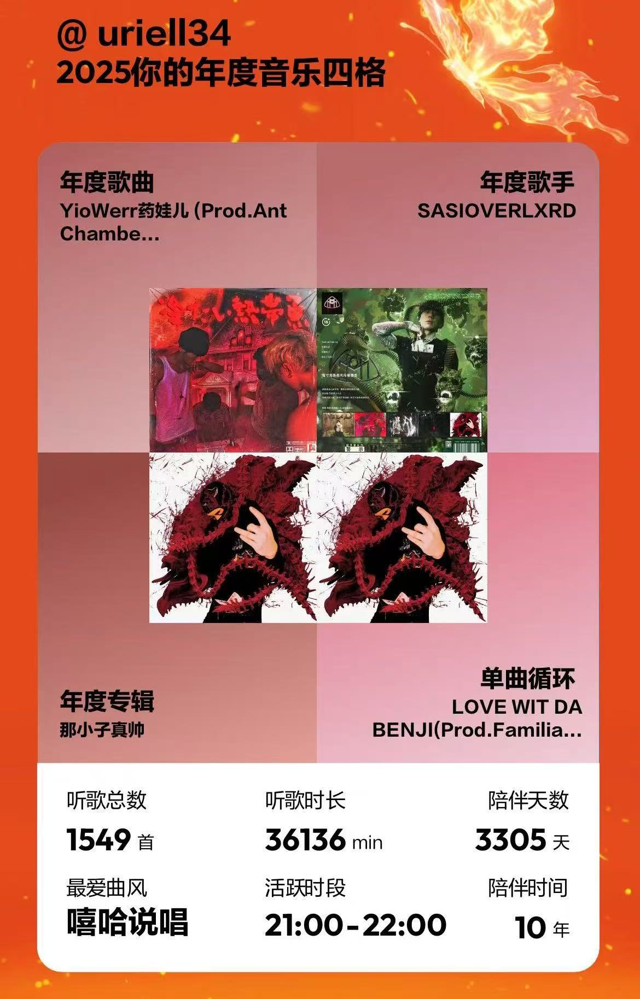
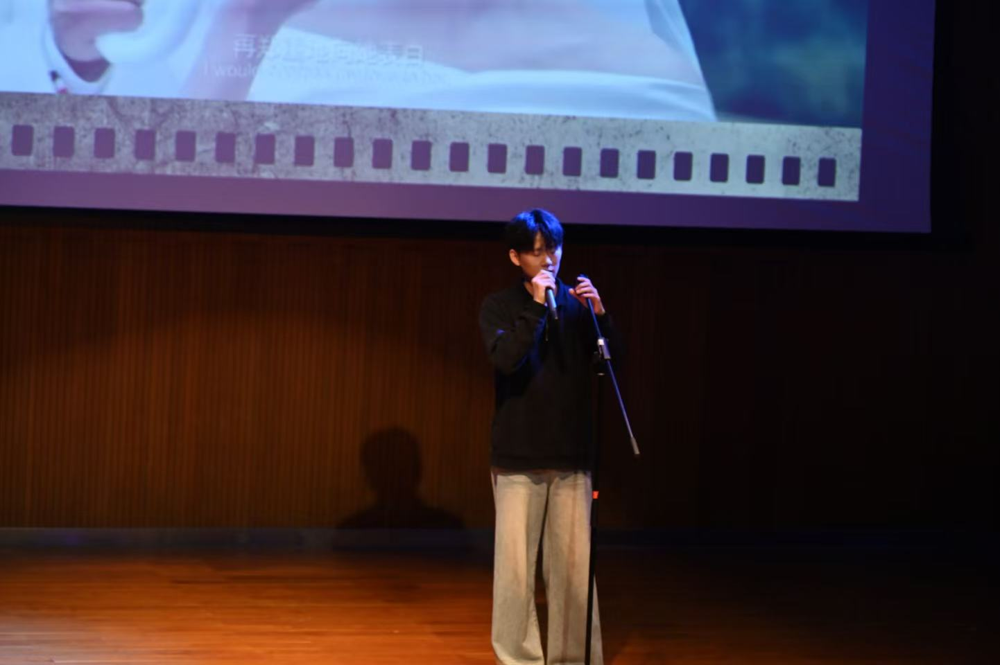
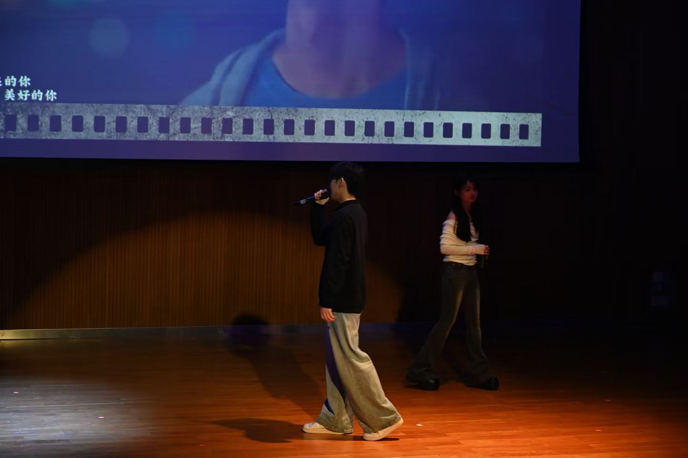

Architectural Style Transfer
How I used Stable Diffusion and ControlNet for my graduation project.
I am a Computer Science undergraduate student currently based in Macau. My academic focus lies at the intersection of Computer Vision and Artificial Intelligence. Now, I am working at the final project in combination of CV and AI.
my hobbies are music and games, I deeply interesed in singing. Currently, I am working on the suggested exercise 02 in CISC3003,



My roadmap for professional and academic growth.
Whether debugging Python environment errors or fine-tuning models, I believe persistence is the key to innovation.
From IoT sensors to web scraping, I value creating systems where data is reliably captured and stored.
I am preparing to Looking for jobs related to my major.
I aim to develop "Agentic" workflows that can interact with the real world.
How I used Stable Diffusion and ControlNet for my graduation project.
Scraping Macau government data to build a real-time Bus AI Agent.
Exploring Canny Edge Detection and Histogram Equalization in Python.